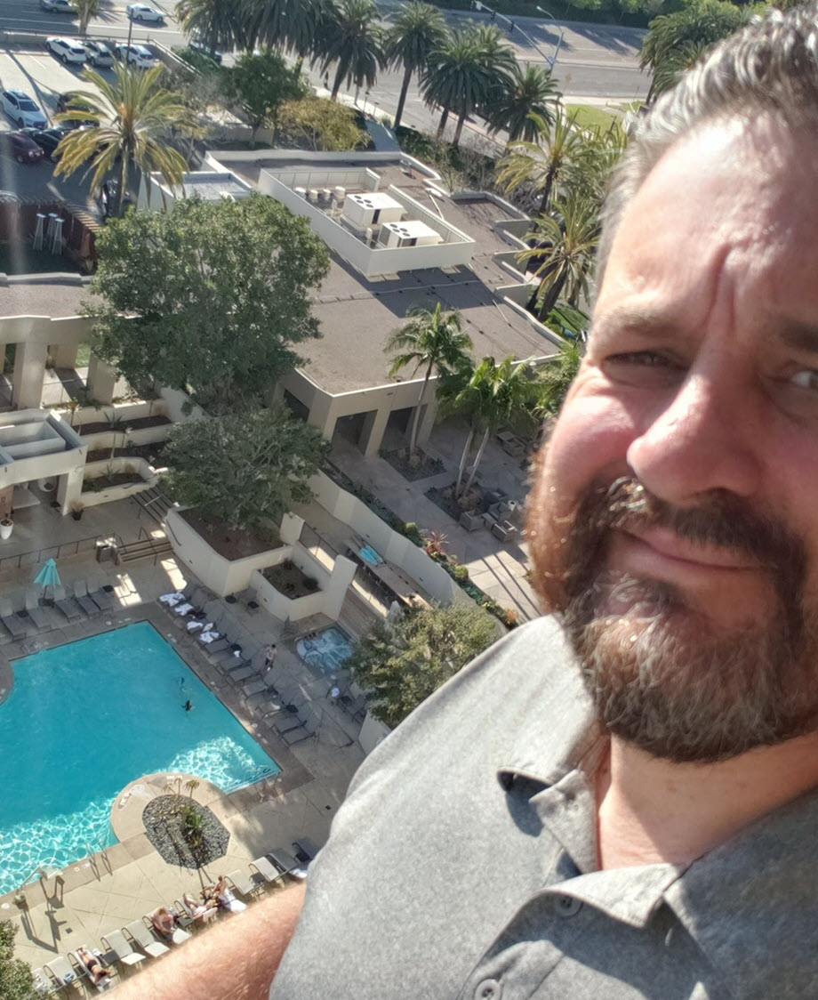

About Me
I am 44 years old. I was born and raised in Eugene, Oregon (GO DUCKS). I am a Field Service Engineer for Hyundai Motor America and have been for the past four years. After serving in the United States Navy in the 90's, I relocated here to Southern California. I started in the automotive field here at the Riverside Auto Center in 2000 while attending Universal Technical Institute (UTI). I graduated UTI with honors and I have worked for Ponitac, Buick, Suzuki, Saturn, finally accepting a position with Hyundai of Riverside in 2006 as an Automotive Technician / Shop Foreman. In 2013, I won the "World's Best Hyundai Technician" through a competition held in Seoul, Korea with 100 competitors from 52 countries. In 2015, I accepted my current position to challege myself within a new role in my field and to open new doors.
I currently "code" as a hobby (started activity December 2018) and why I requested to attend the bootcamp to my employer. I am slated to assist / back-up the current lead in my office as the Internal Web / Application Developer. I am currently designing a web portal for my department.
I live here in Riverside. I am married with 4 kids, two grandkids and two dogs (a Shepherd and a Lab). I am a family man with most of my activities centered around family events or get togethers. With that said, I love concerts and all car related activities (races, shows, etc.). Fun fact, I have seen most rock / metal bands there are. I believe I may have an addiction.